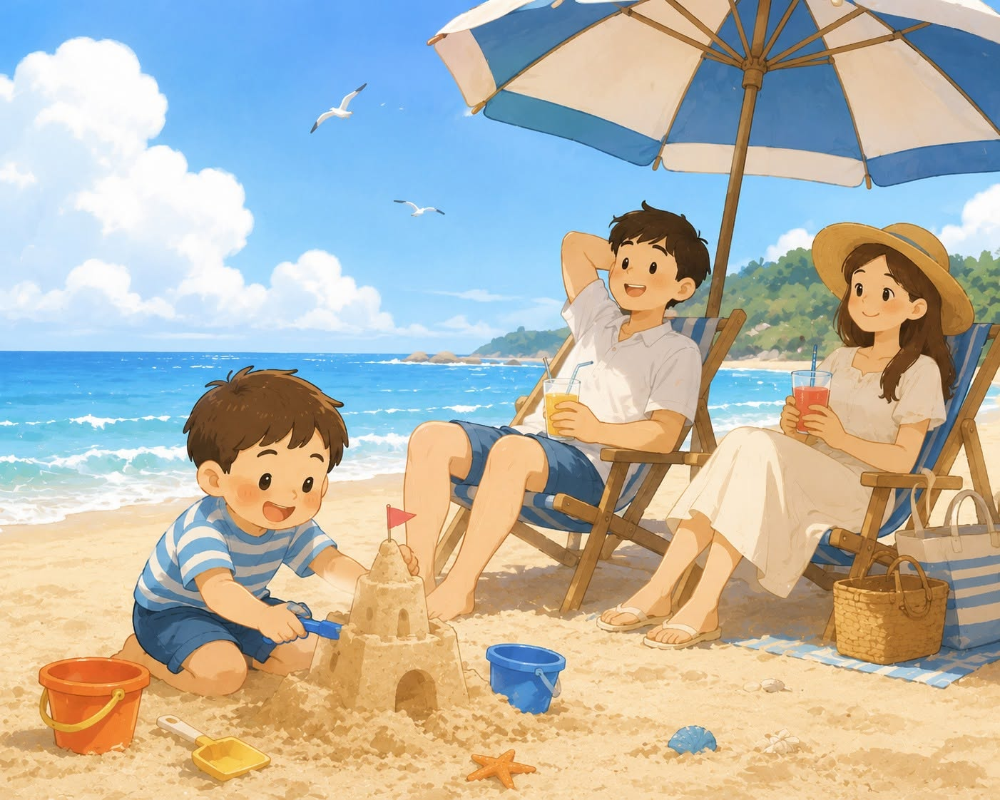

特殊兒支持
關注 ADHD、ASD 與其他特殊需求兒童，讓差異被理解、讓學習有更多可能。
EDUCATION OPENS A WINDOW
陪伴特殊需求兒童與家庭，讓每個孩子都能在理解、尊重與愛裡，找到自己的成長節奏。
個資保護優先
本預覽不收集或公開服務對象個資。

OUR BELIEF
達康慈善基金會以慈善教育為目的，關注特殊需求兒童、家庭與社會中容易被忽略的人。我們相信，友善不是特別待遇，而是讓每個人都能安心參與的基本設計。
我們或許無法改變所有處境，但可以從一個理解、一聲問候開始。
WHAT WE DO
從孩子、家庭到社區，建立溫柔但持續的支持連結。
關注 ADHD、ASD 與其他特殊需求兒童，讓差異被理解、讓學習有更多可能。

提供家長友善資訊與成長資源，陪伴照顧者找到支持，不再獨自承擔。

以自在、低壓力的活動設計，讓孩子與家庭安心參與公共文化生活。

串連日常問候與社會資源，關注弱勢家庭、高齡者與需要陪伴的人。
LATEST STORIES
每一篇分享，都是讓理解多走一步。

願每一份陪伴與理解，都能在生活中持續發光。
每一次擁抱、傾聽與守候，都讓孩子知道自己不是獨自面對。
從理解情緒開始，陪孩子把難以說出的感受慢慢變成可以被聽見的訊息。
STORIES ALONG THE WAY
收好一路走來的活動、照片與故事，讓想理解、需要支持的人更容易找到方向。
近期活動與粉專關懷內容整理。
基金會授權照片與公開圖文入口。
特殊兒、家庭支持與慈善教育影音。
可信文章、影音與正式下載資料。
BE PART OF THE CHANGE
邀請您關心特殊需求兒童、家庭與社區中的每一個人。分享正確資訊、參與友善活動，讓支持成為日常。